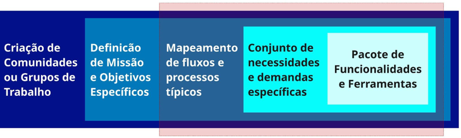
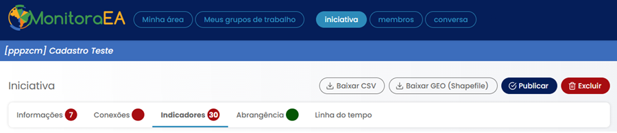
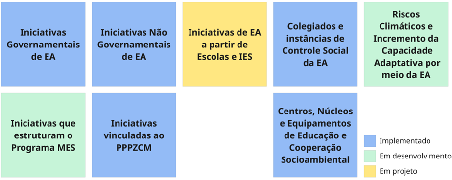
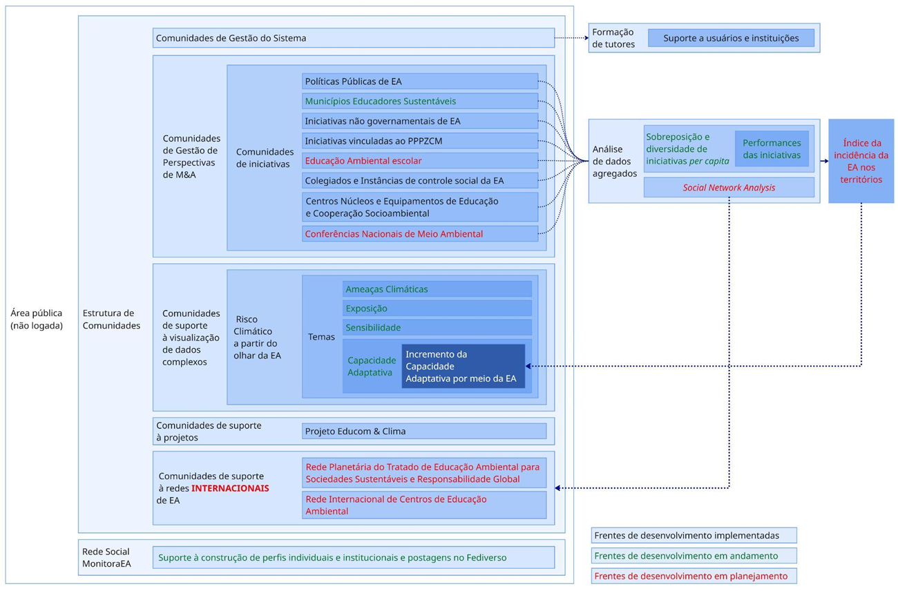
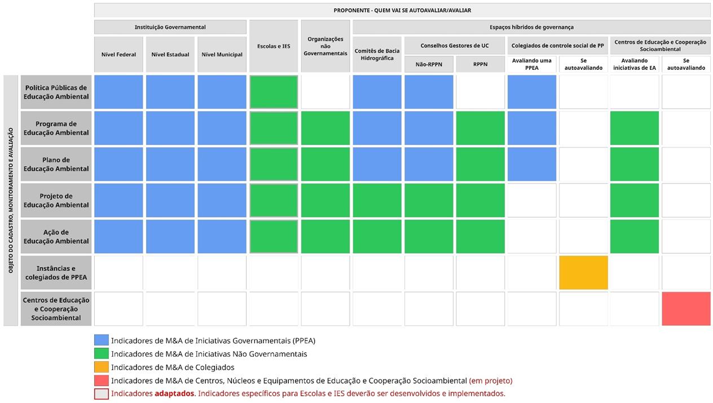
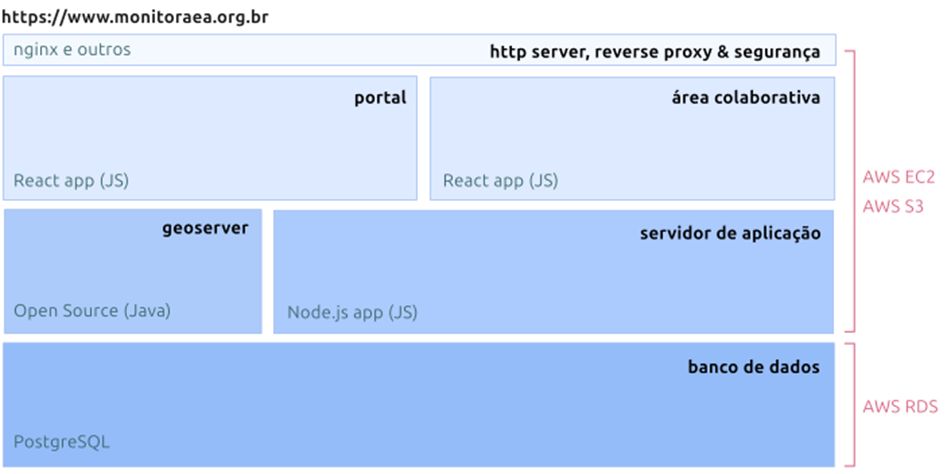
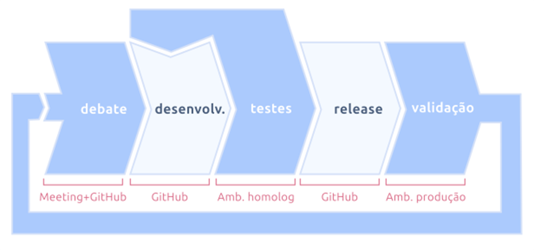
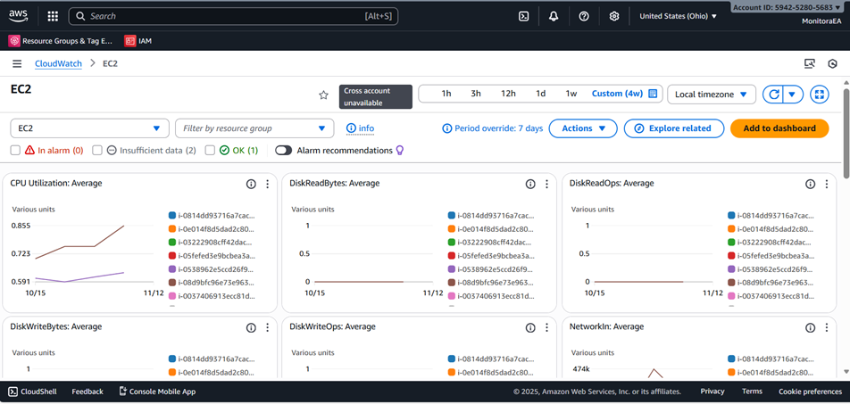

Arquitetura
📌 ARQUITETURA SÓCIOTÉCNICA
👉 Lógica de comunidades e estrutura colaborativa
O Sistema MonitoraEA foi concebido a partir de uma lógica de comunidades, que constitui o eixo organizador de sua arquitetura, de seus fluxos de informação e de suas práticas de interação. Essa abordagem reconhece que os dados sobre Educação Ambiental não são meros registros técnicos, mas expressões de práticas sociais, políticas e educativas que emergem de processos colaborativos e territorialmente situados.
Com base nesse princípio, o sistema adota o monitoramento participativo como fundamento metodológico, considerando educadores, instituições, coletivos e gestores como coprodutores de dados e conhecimento, e não apenas como usuários finais. As ações realizadas na plataforma são, portanto, estruturadas em torno de comunidades de prática, que funcionam como grupos de trabalho que articulam produção e uso coletivo das informações, validação e aprendizado.
Cada comunidade constitui uma unidade organizacional dinâmica dentro do sistema, articulando pessoas, instituições e dados em torno de uma missão específica compartilhada. A partir dessa missão, derivam-se fluxos internos de trabalho e demandas específicas por informação, que orientam o conjunto de funcionalidades, ferramentas e módulos a serem disponibilizados. Esse mecanismo cria um circuito iterativo de desenvolvimento, no qual as comunidades retroalimentam a evolução da plataforma e, em contrapartida, recebem instrumentos que ampliam sua capacidade de ação e análise.
A Figura 1 ilustra esse processo de concepção modular e colaborativa, evidenciando como a lógica comunitária estrutura o ciclo de desenvolvimento do sistema. Essa metodologia assegura que o MonitoraEA evolua como um sistema vivo e adaptativo, no qual a arquitetura técnica reflete a organização social da própria rede de Educação Ambiental.

Figura 1 - Ciclo de concepção modular típica do Sistema MonitoraEA.
A partir da versão 2.01, o MonitoraEA passou a adotar um padrão de referência para a criação de comunidades voltadas ao cadastro, avaliação e monitoramento de iniciativas, definindo um conjunto base de funcionalidades ajustável a diferentes contextos territoriais e institucionais. Esta versão considera cinco funcionalidades básicas: i) formulário para a apresentação de informações cadastrais da iniciativa; ii) ferramenta webgis para a definição do polígono de representação da área de abrangência espacial da iniciativa; iii) formulários para autoavaliação da iniciativa, organizados por meio de dimensões de monitoramento e avaliação e indicadores a elas associados; iv) formulário para a descrição de parcerias e conexões institucionais realizadas pela iniciativa e; v) ferramenta de registro de eventos e marcos relevantes no ciclo de vida da iniciativa, em uma perspectiva cronológica (Linha do tempo da iniciativa). As funcionalidades (i) e (iii) variam entre as diversas perspectivas de monitoramento e avaliação do Sistema MonitoraEA. A figura 2 apresenta a organização das abas que permitem acessar estas cinco funcionalidades básicas dentro da área colaborativa das comunidades de M&A.

Figura 2 - Barra de abas da área colaborativa das comunidades de M&A do Sistema MonitoraEA.
A partir dessa base, a arquitetura do sistema organiza-se em módulos integrados que sustentam o ciclo completo de geração, integração, visualização e engajamento das comunidades, que será apresentado em mais detalhes na seção 4 deste relatório.
👉 Estruturação de Comunidades e Perspectivas de M&A
Além de sua organização modular de funcionalidades, o Sistema MonitoraEA se desdobra e se estrutura a partir de perspectivas de Monitoramento e Avaliação (M&A), que configuram diferentes camadas temáticas e institucionais de observação dentro do sistema. Essas perspectivas representam as múltiplas formas de atuação da Educação Ambiental no Brasil, compreendidas a partir do prisma das políticas públicas e das interfaces entre Estado, sociedade civil e territórios.
Cada Perspectiva de M&A constitui um eixo estruturante do sistema, a partir do qual se organiza uma comunidade de gestão encarregada de orientar e articular os processos de monitoramento, definição de indicadores e produção descentralizada de dados em uma determinada dimensão da Educação Ambiental. Essas comunidades funcionam como núcleos temáticos de referência, a partir dos quais os usuários podem criar suas próprias comunidades de iniciativas, vinculadas à perspectiva escolhida. Essa vinculação assegura que cada comunidade opere com campos, indicadores e instrumentos específicos, coerentes com os referenciais metodológicos e analíticos da respectiva perspectiva. A figura 3 e o quadro 2 apresentam o panorama das perspectivas de M&A existentes e previstas para o MonitoraEA.

Figura 3 - Mapa de perspectivas de M&A do Sistema MonitoraEA.
Quadro 2 – Principais Perspectivas Estruturadas no MonitoraEA
| Perspectivas de M&A | Foco | Abrangência | Especificidades |
|---|---|---|---|
| Iniciativas Governamentais de Educação Ambiental | Políticas, programas e ações de EA desenvolvidas por órgãos públicos federais, estaduais e municipais | Todas as esferas de governo e poderes constituídos | Instrumentos de monitoramento alinhados aos ciclos de gestão pública |
| Municípios Educadores Sustentáveis | Processos de educação ambiental integrados ao desenvolvimento territorial sustentável nos municípios | Governos municipais | Indicadores de sustentabilidade urbana e gestão territorial |
| Iniciativas não governamentais de Educação Ambiental | Ações desenvolvidas por organizações da sociedade civil, coletivos e movimentos sociais | ONGs, fundações, redes sociais, comunidades tradicionais | Instrumentos adaptados à diversidade de atores e formas de organização |
| Iniciativas vinculadas ao PPPZCM | Educação ambiental voltada para a gestão costeira e marinha | Zona costeira, áreas marinhas e comunidades litorâneas | Indicadores específicos para ecossistemas costeiros e marinhos |
| Colegiados e instâncias de controle social da Educação Ambiental | Comissões, conselhos e fóruns de participação social em EA | CIEAs, CIMEAs, comitês de bacia, conselhos gestores | Instrumentos de monitoramento da participação social e governança |
| Centros, Núcleos e Equipamentos de Educação e Cooperação Socioambiental | Espaços físicos e institucionais dedicados à articulação da EA | CECSAs, centros de educação ambiental, espaços educadores | Indicadores de infraestrutura, capacidade institucional e impacto territorial |
| Iniciativas de EA a partir de Escolas e IES | Processos, projeto e práticas de EA em instituições de ensino | Escolas de educação básica (redes públicas e privadas), Instituições de Ensino Superior e estudantes | Indicadores de integração curricular, práticas pedagógicas e engajamento comunitário |
| Riscos Climáticos e Incremento da Capacidade Adaptativa por meio da EA | Estratégias de EA voltadas à redução de vulnerabilidades e aumento da resiliência comunitária, institucional e territorial | Municípios, territórios e comunidades expostos a riscos climáticos | Indicadores de ameaça, exposição, sensibilidade e capacidades adaptativas e impacto das iniciativas e estruturas de EA |
Estas perspectivas formam uma rede de comunidades interdependentes, cuja interação viabiliza a construção colaborativa e descentralizada de dados e informações. Tal arranjo reflete a diversidade de práticas e atores do campo da Educação Ambiental, ao mesmo tempo em que reforça o papel do MonitoraEA como infraestrutura pública de governança adaptativa e de gestão integrada da informação socioambiental. A figura 4 apresenta o mapa geral de comunidades sob o qual se estrutura o planejamento de desenvolvimentos do Sistema MonitoraEA.

Figura 4 - Estruturação de comunidades do Sistema MonitoraEA
A figura 5 apresenta o detalhamento do mapa de aplicação de instrumentos de monitoramento e avaliação (M&A), considerando cada perspectiva e, para cada uma delas, das possibilidades de cadastro.

Figura 5 - Matriz de aplicação das diferentes tipologias de indicadores do Sistema MonitoraEA, por perspectiva.
👉 Perfis de Usuários e Tipologias
Dada sua concepção, o Sistema MonitoraEA foi desenhado para viabilizar o atendimento a diferentes tipos de usuários, organizados segundo sua natureza (individual ou institucional) e seu papel no ciclo de produção e uso das informações. A distinção entre usuários individuais e institucionais reflete a forma de interação com a plataforma e o grau de responsabilidade nos processos de geração, validação e utilização dos dados. A distinção entre os grupos está relacionada à escala e ao tipo de contribuição que oferecem ao sistema.
Os usuários individuais constituem a unidade básica de interação do sistema. Incluem educadores ambientais, pesquisadores, estudantes, gestores públicos e demais pessoas engajadas em processos educativos e de ação socioambiental. Atuam diretamente na geração de dados sobre práticas, experiências e iniciativas locais, participam de autoavaliações colaborativas e interagem em comunidades temáticas.
Embora representem o nível mais elementar da estrutura, o MonitoraEA é concebido para que suas ações ocorram de forma articulada e cooperativa, estimulando a formação de redes, atuação colaborativa e o aprendizado social coletivo. O sistema, portanto, valoriza a contribuição individual sem perder de vista a sua finalidade principal, voltada ao fortalecimento de comunidades e processos de aprendizagem distribuída.
Os usuários institucionais são orientados a utilizar o MonitoraEA como infraestrutura digital de gestão, monitoramento e cooperação interinstitucional, mas também como meio estruturado de produção e consolidação de informações organizacionais e territoriais. Diferem-se dos usuários individuais pela escala de atuação e pela responsabilidade institucional associada às informações produzidas.
Essas instituições operam como nós da rede de governança do sistema, alimentando e utilizando dados em três frentes principais:
- Governamentais: órgãos públicos responsáveis por políticas de Educação Ambiental (MMA, MEC, secretarias estaduais e municipais, universidades públicas e autarquias). Utilizam o sistema para planejamento, acompanhamento e avaliação de políticas e programas;
- Não governamentais: organizações da sociedade civil, fundações, redes e coletivos educadores, movimentos sociais que utilizam a plataforma para registrar projetos e programas, sistematizar experiências e fortalecer redes de cooperação;
- Híbridas: instâncias de natureza colegiada e fóruns participativos (CIEA, CIMEA, Comitês de Bacia, Conselhos Gestores e CECSA), que articulam Estado e sociedade civil em processos de monitoramento e deliberação compartilhada.
Além desses grupos, o sistema conta com usuários internos, responsáveis pela gestão técnica, editorial e comunitária da plataforma. Esses atores administram, por meio de comunidades específicas, o portal principal (conteúdos e atualizações), coordenam as comunidades de gestão das perspectivas de M&A e asseguram a integração entre equipes de desenvolvimento, administração e articulação social. Eles compõem o núcleo de governança técnica e colaborativa do sistema, garantindo coerência metodológica e sustentabilidade operacional.
Por fim, o público geral acessa a área pública do portal, consultando painéis, mapas e dados consolidados. Embora não produza informações diretamente, esse grupo reforça o caráter público, educativo e transparente da plataforma e contribui para a difusão de práticas e resultados.
Quadro 3 – Principais tipologias de usuários do Sistema MonitoraEA
| Tipologia de Usuário | Exemplos | Natureza da Contribuição e Principais Usos |
|---|---|---|
| Usuários Individuais | Educadores ambientais, pesquisadores, estudantes, agentes comunitários | Geração de dados sobre iniciativas e práticas locais; participação em autoavaliações; interação em comunidades temáticas; colaboração em redes de aprendizagem e mobilização social. |
| Institucionais Governamentais | Ministérios, secretarias, universidades públicas, autarquias, órgãos gestores de UC | Consolidação e gestão de informações institucionais; monitoramento de políticas; integração de dados e produção de relatórios e indicadores territoriais. |
| Institucionais Não Governamentais | ONGs, fundações, redes e coletivos educadores | Registro e análise de projetos; sistematização de experiências; validação colaborativa de dados; articulação de redes e comunidades. |
| Institucionais Híbridas | CIEA, CIMEA, CECSA, Comitês e Conselhos Gestores | Acompanhamento participativo e deliberação compartilhada; produção e validação de diagnósticos territoriais; articulação entre Estado e sociedade civil. |
| Usuários internos | Administradores do portal, coordenadores de perspectivas de M&A, editores de conteúdo | Gestão técnica e comunitária da plataforma; curadoria de informações; mediação entre comunidades e infraestrutura; administração das perspectivas de M&A. |
| Público Geral | Cidadãos, educadores e estudantes visitantes do portal | Consulta aberta a dados, painéis e mapas; uso educativo e informacional; difusão de resultados e boas práticas. |
👉 Matriz de Correspondência Atores x Funcionalidades
A diversidade de perfis descrita reflete-se diretamente na forma como cada grupo interage com o sistema e utiliza suas funcionalidades. A matriz a seguir sintetiza essa relação, demonstrando a correspondência entre os tipos de usuários e os principais módulos e componentes da plataforma. Ela evidencia a característica distribuída e colaborativa do MonitoraEA, em que diferentes atores contribuem de forma complementar para a geração, validação, análise e disseminação das informações.
Esta matriz demonstra como o MonitoraEA foi concebido para atender a diferentes necessidades e perfis de interação, garantindo que cada grupo de usuários tenha acesso às funcionalidades adequadas ao seu papel e responsabilidade no sistema.
Quadro 4 – Correspondência entre atores e principais categorias de funcionalidades1
| Funcionalidade / Usuário | Indivíduos | Instit. Govern. | Instit. Não Gov. | Instit. Híbridas | Usuários Internos | Público Geral |
|---|---|---|---|---|---|---|
| Cadastro de iniciativas | Alta | Alta | Alta | Alta | Alta | Nenhum |
| Autoavaliação | Alta | Alta | Alta | Alta | Nenhum | Nenhum |
| Gestão de comunidades | Média | Alta | Alta | Alta | Alta | Nenhum |
| Visualização de dados | Alta | Alta | Alta | Alta | Alta | Alta |
| Análise e relatórios | Média | Alta | Alta | Alta | Alta | Baixa |
| Validação de dados | Baixa | Média | Média | Alta | Alta | Nenhum |
| Interação social | Alta | Média | Alta | Alta | Alta | Baixa |
| Gestão de conteúdos | Baixa | Média | Média | Média | Alta | Nenhum |
| Administração do sistema | Nenhum | Baixa | Baixa | Baixa | Alta | Nenhum |
📌 ARQUITETURA TECNOLÓGICA
👉 Arquitetura Lógica e Componentes
A arquitetura lógica do MonitoraEA (Figura 6) organiza-se em camadas funcionais integradas, baseadas em princípios de modularidade, isolamento de responsabilidades e uso de padrões abertos. A separação entre camadas permite a evolução independente de componentes, manutenção simplificada e integração com serviços externos. As principais camadas são apresentadas no Quadro 5.
Quadro 5 – Camadas funcionais do Sistema MonitoraEA
| Camada | Função / Responsabilidades | Tecnologias |
|---|---|---|
| Apresentação (Frontend) |
Interfaces públicas e autenticadas |
HTML5, CSS3, JavaScript, React.js, Leaflet |
| Visualização de dados e mapas interativos | ||
| Cadastro e gestão de comunidades | ||
| Design responsivo e acessível | ||
| Aplicação | Núcleo lógico e regras de negócio |
Node.js, Frameworks de aplicação web |
| Autenticação e autorização | ||
| Gestão de usuários | ||
| Processamento e validação de dados | ||
| Serviços e Integração |
APIs RESTful |
REST APIs, Serviços de mensageria |
| Serviços web especializados | ||
| Comunicação entre módulos | ||
| Integração externa com sistemas e bases governamentais |
||
| Dados | Armazenamento estruturado, geoespacial e de documentos |
PostgreSQL/PostGIS, Sistemas de arquivos distribuídos, AWS RDS |
| Logs e auditoria | ||
| Backup e recuperação | ||
| Infraestrutura | Hospedagem de aplicações em servidores e containers |
AWS EC2, Docker, Serviços de cloud |
| Rede e conectividade | ||
| Segurança (firewalls, SSL/TLS) | ||
| Monitoramento |
Essa arquitetura segue o modelo web distribuído, permitindo que diferentes módulos operem de forma integrada, porém desacoplada, garantindo resiliência e escalabilidade horizontal.

Figura 6 – Camadas constituintes do sistema MonitoraEA com detalhe para as escolhas tecnológicas e infraestrutura implementadas
👉 Infraestrutura Tecnológica
A infraestrutura de hospedagem e serviços foi dimensionada para atender à demanda crescente de usuários e operações simultâneas. O ambiente é composto por instâncias virtuais dedicadas à aplicação, banco de dados e serviços auxiliares, com gerenciamento de versões automatizado e pipelines contínuos de implantação (CI/CD2). As principais características técnicas são apresentadas no quadro 6.
Quadro 6 – Matriz de funções e ferramentas
| Área / Procedimento | Função / Objetivo | Ferramentas / Tecnologias |
|---|---|---|
| Monitoramento (AWS CloudWatch) | Coleta de métricas de desempenho, logs e alertas automáticos; visualização em tempo real do estado do sistema mobilização social. | AWS CloudWatch, dashboards de monitoramento |
| Métricas Monitoradas | Acompanhar performance e identificar degradação | CPU, memória, disco, rede, latência, taxa de erro |
| Logs Centralizados | Agregar logs de aplicação, acesso e auditoria | AWS CloudWatch Logs, sistemas de logging centralizados |
| Alertas Automáticos | Notificar situações críticas e degradação de performance | AWS CloudWatch Alarms, notificações automáticas |
| Escalabilidade e Disponibilidade | Garantir operação contínua e adaptável à demanda | Escalabilidade horizontal, balanceamento de carga, multi-AZ, auto-scaling, backup multi-regional |
| Procedimentos de Backup e Restauração | Preservar dados e permitir recuperação pontual | Backups automatizados, retenção configurável, versionamento incremental, testes de restauração, arquivamento de longo prazo |
| Ambiente de Homologação e Testes | Validar sistemas antes da produção e garantir segurança | Ambiente isolado, dados de teste, pipeline de implantação, testes automatizados, validação de segurança (vulnerabilidades e penetração) |
A configuração atual assegura alta disponibilidade, rastreabilidade das operações e compatibilidade com padrões de interoperabilidade de dados públicos, atendendo aos requisitos de transparência e confiabilidade do sistema.
👉 Fluxo de Desenvolvimento
O ciclo de desenvolvimento do MonitoraEA (Figura 7) segue uma lógica de integração e entrega contínuas (CI/CD), estruturada em etapas iterativas que busca garantir qualidade, rastreabilidade e estabilidade das versões em produção. Esse fluxo combina práticas ágeis de desenvolvimento colaborativo com políticas de controle de versionamento e homologação em múltiplos ambientes. As principais etapas são:
- Planejamento e priorização: definição de demandas, correções e novas funcionalidades, com base no roadmap técnico e nas necessidades identificadas pelas comunidades de gestão das perspectivas de M&A;
- Desenvolvimento colaborativo: implementação das funcionalidades em ambiente de desenvolvimento, com versionamento controlado via Git e repositórios públicos;
- Integração contínua: execução automática de testes unitários e validações de código, assegurando compatibilidade entre módulos e estabilidade do build;
- Homologação: implantação em ambiente de testes para validação funcional e revisão coletiva antes da liberação em produção;
- Implantação e monitoramento: atualização da versão em produção com registro automático de logs, auditoria de erros e acompanhamento de desempenho;
- Manutenção evolutiva: registro de melhorias e ajustes com base no uso real e nas contribuições da comunidade.
Esse modelo favorece a evolução incremental do sistema, reduz riscos de regressão e mantém a documentação técnica permanentemente sincronizada com o código e os ambientes operacionais.

Figura 7 - Ciclo iterativo de desenvolvimento, suas fases e ambientes de implementação.
Do ponto de vista dos ambientes operacionais, o sistema opera a partir de 3 ambientes distintos:
- Ambiente de Desenvolvimento: desenvolvimento e teste de novas funcionalidades, baseado em Instâncias dedicadas para cada desenvolvedor. Opera a partir de conjuntos de teste sintéticos ou cópias anonimizadas, com acesso restrito à equipe de desenvolvimento;
- Ambiente de Homologação: validação funcional e testes de integração. Configuração idêntica ao ambiente de produção. Opera a partir de cópia recente e anonimizada dos dados de produção. Acesso restrito à equipe de qualidade, gestores e usuários chave;
- Ambiente de Produção: Operação do sistema para usuários finais. Infraestrutura otimizada para performance e segurança. Opera a partir de dados reais dos usuários e instituições. Acesso aberto a todos os usuários cadastrados e público geral.
👉 Infraestrutura de Backup e Monitoramento
O MonitoraEA adota uma política de backup e observabilidade, garantindo a continuidade operacional, a integridade das informações e a confiabilidade dos dados. Os backups de banco de dados são realizados diariamente por meio de snapshots automatizados, com múltiplas versões retidas por 7 dias e armazenadas em regiões AWS distintas. Esses backups são criptografados em repouso e em trânsito utilizando AES-256 e passam por testes regulares de restauração para validação. Os backups de aplicação incluem versionamento de configurações e scripts, preservação do código-fonte em repositórios Git com histórico completo, armazenamento de artefatos como imagens Docker e pacotes de implantação. Já os backups de conteúdo contemplam arquivos de usuários, logs de auditoria e dados geoespaciais, garantindo preservação incremental e especializada conforme requisitos regulatórios e técnicos.
O monitoramento e registro de eventos operacionais é conduzido por meio do AWS CloudWatch, que coleta métricas de infraestrutura, incluindo CPU, memória, disco e rede, bem como métricas de aplicação, como tempo de resposta, taxa de erro e throughput. Logs agregados de aplicação, acesso, auditoria e erros são centralizados, permitindo análise detalhada e detecção de anomalias. Alertas inteligentes notificam automaticamente situações críticas e tendências de degradação, enquanto dashboards customizados oferecem visualização em tempo real do estado do sistema. Complementarmente, o Google Analytics acompanha métricas de uso, comportamento dos usuários, fluxos de navegação, taxas de conversão, análise geográfica e performance de frontend, subsidiando ajustes de usabilidade e desempenho.
O sistema de logs centralizado consolida logs de aplicação (debug, info, warn, error), auditoria (ações de usuários e modificações de dados), segurança (tentativas de acesso e violações de política) e performance (tempos de resposta, queries lentas), garantindo rastreabilidade completa das operações. O monitoramento de desempenho inclui métricas-chave, como disponibilidade superior a 99,5%, tempo de resposta P95 inferior a 2 segundos para páginas críticas, capacidade de throughput para mais de 100 usuários concorrentes, acompanhamento do crescimento de dados e latência de rede em diferentes regiões geográficas. Alertas e notificações são configuradas para falhas críticas, degradação de desempenho, limites de recursos e atividades suspeitas, assegurando ação imediata quando necessário.
Essa infraestrutura tecnológica integrada, combinando políticas rigorosas de backup, observabilidade detalhada e monitoramento contínuo, assegura que o MonitoraEA opere com confiabilidade, resiliência técnica e segurança, atendendo aos requisitos de uma plataforma nacional de dados em Educação Ambiental e em conformidade com boas práticas de gestão de sistemas distribuídos.

Figura 8 - Opção da CloudWatch mostrando métricas das instâncias EC2.
👉 Repositórios de Código e Versionamento
O código-fonte da plataforma está distribuído em dois repositórios distintos. O repositório “monitoraea-colab” reúne a camada de servidor e a ferramenta cliente da camada colaborativa. O repositório “monitoraea-portal” é destinado ao armazenamento das ferramentas do portal (cliente).
Abaixo, seguem os códigos DOI registrados na plataforma Zenodo:
DOI monitoraea-colab: 10.5281/zenodo.17569046
DOI monitoraea-portal: 10.5281/zenodo.17472231
As políticas de versionamento adotadas incluem o versionamento semântico, no formato MAJOR.MINOR.PATCH (por exemplo, 2.17.1), garantindo clareza sobre a natureza das alterações em cada versão. A gestão de código é realizada por meio de branches estruturadas, incluindo main, develop, feature/ e hotfix/, permitindo organização e fluxo de desenvolvimento controlado.